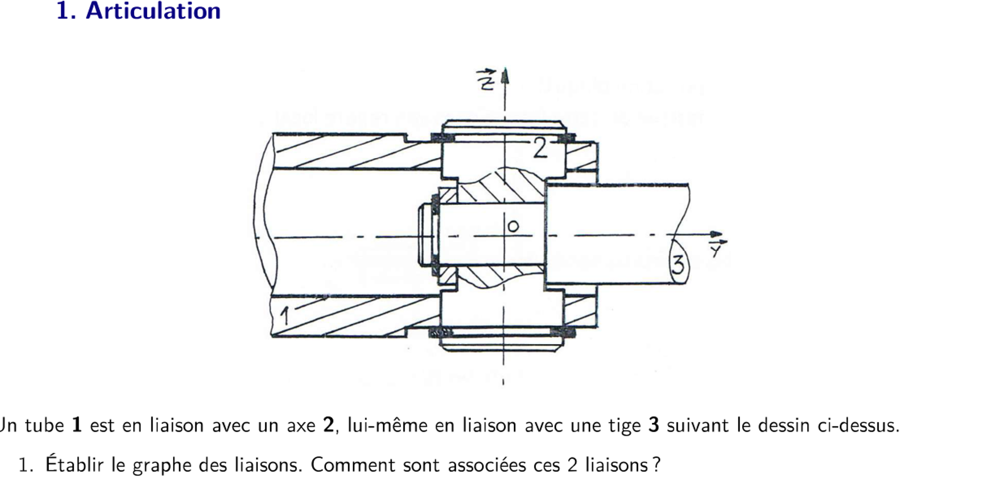
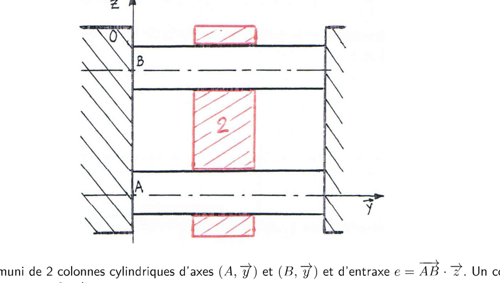
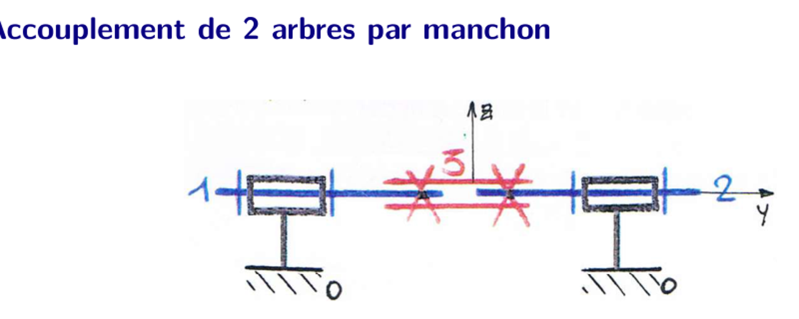
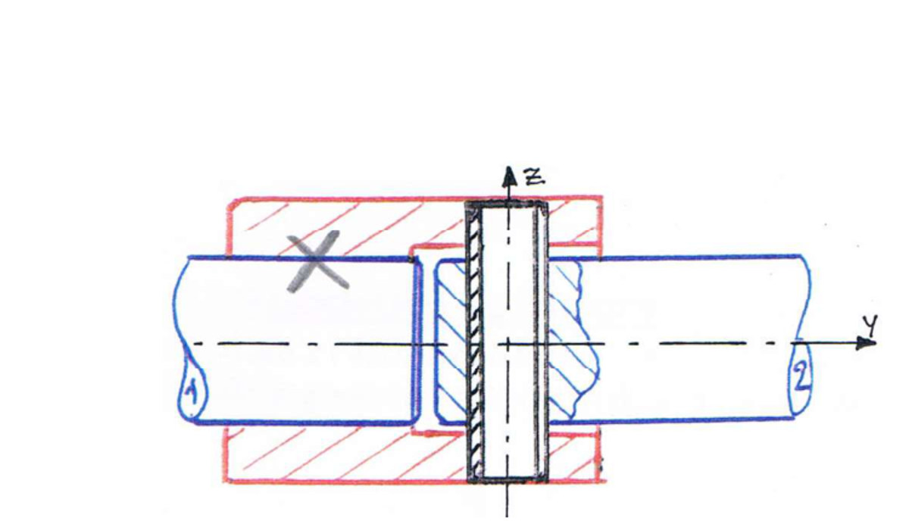
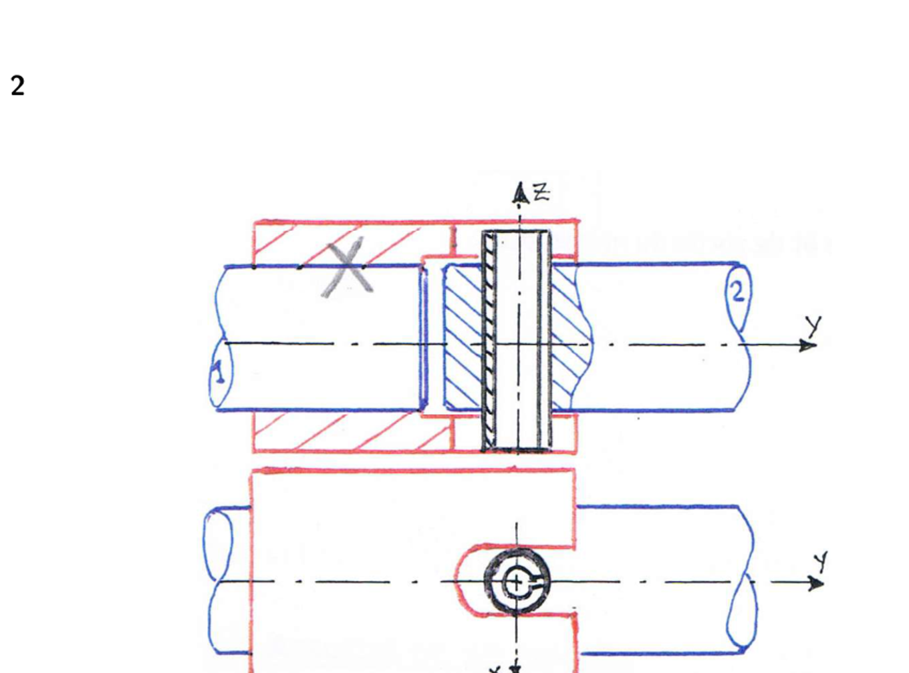
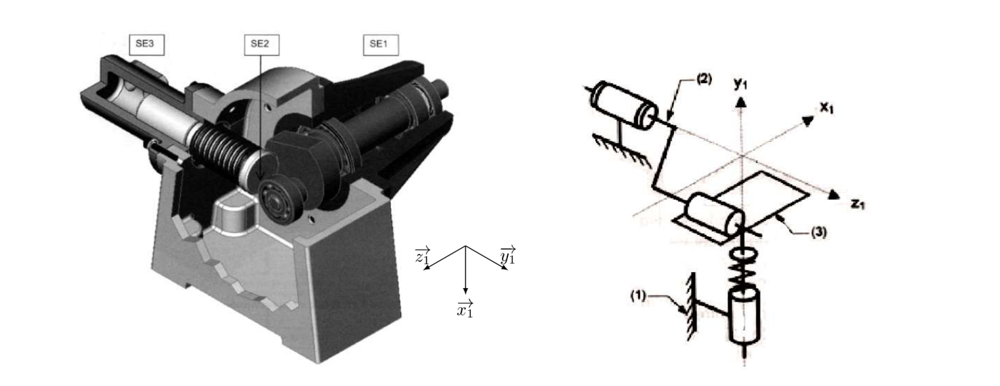
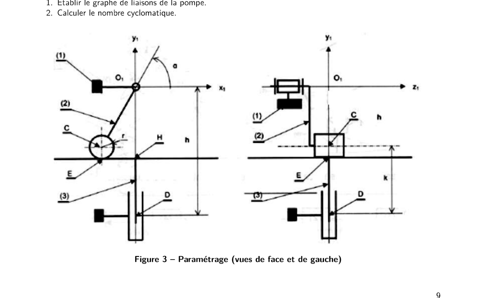
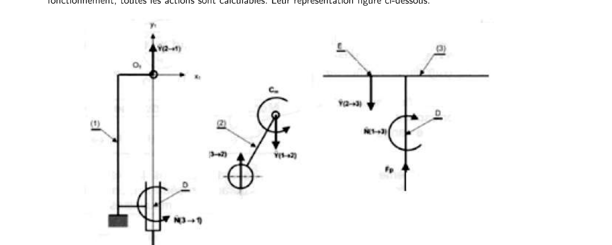
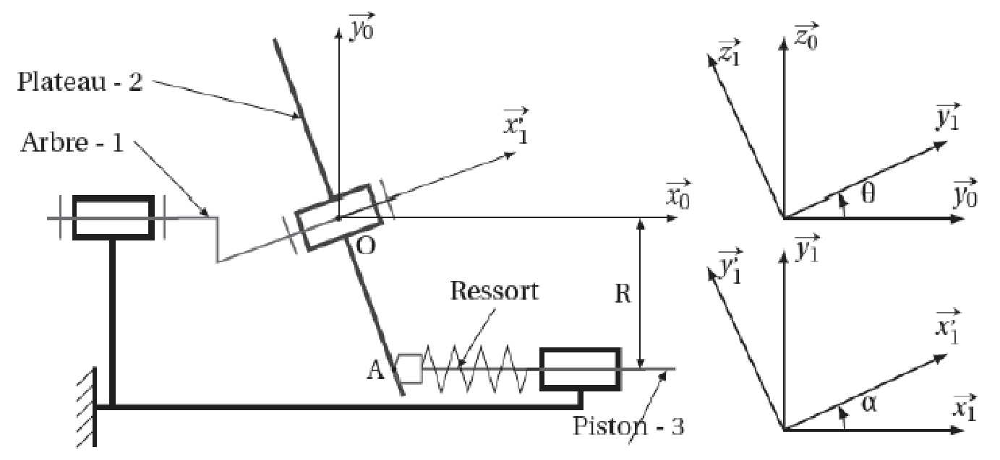

Chapitre 2 — Théorie des mécanismes
Tout ce qu'il faut connaître par cœur pour le chapitre 2 (S2I) : les formules de \(m\) et \(h\) par les deux approches (cinématique / statique), le moyen mnémotechnique du prof — Mickey et Messi — et la méthode la plus simple pour trouver chaque grandeur sans se noyer dans les torseurs. Source : S2I CM C02 — Théorie des mécanismes (cours, 12 p.) et S2I TD C02.
- 📌 Fiches mémo (6)
- Cours / fiche
- 0. Rappels sur les torseurs — Varignon, changement de point/base, exemples
- 1. Vocabulaire de base
- 2. Tableau des liaisons usuelles — la façon simple d'avoir \(I_c\) et \(I_s\)
- 3. Toutes les formules à connaître par cœur
- 4. Le degré d'hyperstatisme \(h\) — Mickey & Messi
- 5. Méthode simple, étape par étape
- 6. Interpréter le résultat
- TD corrigé
- TP + DS
- 📂 Documents donnés
\(\mathcal V=\{\vec0;\vec0\}\)
\(\mathcal T=\{X\vec x+Y\vec y+Z\vec z;\ L\vec x+M\vec y+N\vec z\}\)
\(\mathcal V=\{\omega_x\vec x;\vec0\}\)
\(\mathcal T=\{X\vec x+Y\vec y+Z\vec z;\ M\vec y+N\vec z\}\)
\(\mathcal V=\{\vec0;v_x\vec x\}\)
\(\mathcal T=\{Y\vec y+Z\vec z;\ L\vec x+M\vec y+N\vec z\}\)
\(\mathcal V=\{\omega_x\vec x;\tfrac p{2\pi}\omega_x\vec x\}\)
\(\mathcal T=\{X\vec x+Y\vec y+Z\vec z;\ \tfrac p{2\pi}X\vec x+M\vec y+N\vec z\}\)
\(\mathcal V=\{\omega_x\vec x;v_x\vec x\}\)
\(\mathcal T=\{Y\vec y+Z\vec z;\ M\vec y+N\vec z\}\)
\(\mathcal V=\{\omega_y\vec y+\omega_z\vec z;\vec0\}\)
\(\mathcal T=\{X\vec x+Y\vec y+Z\vec z;\ L\vec x\}\)
\(\mathcal V=\{\omega_x\vec x;v_y\vec y+v_z\vec z\}\)
\(\mathcal T=\{X\vec x;\ M\vec y+N\vec z\}\)
\(\mathcal V=\{\vec\Omega;\vec0\}\)
\(\mathcal T=\{X\vec x+Y\vec y+Z\vec z;\ \vec 0\}\)
\(\mathcal V=\{\vec\Omega;v_x\vec x\}\)
\(\mathcal T=\{Y\vec y+Z\vec z;\ \vec0\}\)
\(\mathcal V=\{\omega_x\vec x+\omega_z\vec z;v_x\vec x+v_y\vec y\}\)
\(\mathcal T=\{Z\vec z;\ M\vec y\}\)
\(\mathcal V=\{\vec\Omega;v_x\vec x+v_y\vec y\}\)
\(\mathcal T=\{Z\vec z;\ \vec0\}\)
0. Rappels sur les torseurs — Varignon, changement de point, changement de base
0.1 Définition
- Torseur cinématique \(\{\mathcal V_{2/1}\} = \{\vec\Omega_{2/1}\, ;\ \vec V(A\in2/1)\}_A\) (résultante = vecteur rotation, moment = vecteur vitesse).
- Torseur des actions mécaniques transmissibles \(\{\mathcal T_{1\to2}\} = \{\vec R\, ;\ \vec M_A\}_A\) (résultante = force, moment = moment/couple).
0.2 Relation de Varignon — changement de point (de réduction)
0.3 Changement de base
0.4 Exemples de torseurs usuels et leur écriture
| Liaison | Torseur cinématique en \(O\) | Torseur d'action transmissible en \(O\) |
|---|---|---|
| Encastrement | \(\{\vec 0\, ;\ \vec 0\}_O\) | \(\{X\vec x+Y\vec y+Z\vec z\, ;\ L\vec x+M\vec y+N\vec z\}_O\) |
| Pivot d'axe \((O,\vec x)\) | \(\{\omega_x\vec x\, ;\ \vec 0\}_O\) | \(\{X\vec x+Y\vec y+Z\vec z\, ;\ M\vec y+N\vec z\}_O\) |
| Glissière d'axe \((O,\vec x)\) | \(\{\vec 0\, ;\ v_x\vec x\}_O\) | \(\{Y\vec y+Z\vec z\, ;\ L\vec x+M\vec y+N\vec z\}_O\) |
| Pivot glissant d'axe \((O,\vec x)\) | \(\{\omega_x\vec x\, ;\ v_x\vec x\}_O\) | \(\{Y\vec y+Z\vec z\, ;\ M\vec y+N\vec z\}_O\) |
| Hélicoïdale d'axe \((O,\vec x)\), pas \(p\) | \(\{\omega_x\vec x\, ;\ \tfrac{p}{2\pi}\omega_x\vec x\}_O\) | \(\{X\vec x+Y\vec y+Z\vec z\, ;\ \tfrac{p}{2\pi}X\vec x+M\vec y+N\vec z\}_O\) |
| Sphérique à doigt (doigt selon \(\vec x\)) de centre \(O\) | \(\{\omega_y\vec y+\omega_z\vec z\, ;\ \vec 0\}_O\) | \(\{X\vec x+Y\vec y+Z\vec z\, ;\ L\vec x\}_O\) |
| Appui plan de normale \((O,\vec x)\) | \(\{\omega_x\vec x\, ;\ v_y\vec y+v_z\vec z\}_O\) | \(\{X\vec x\, ;\ M\vec y+N\vec z\}_O\) |
| Sphérique (rotule) de centre \(O\) | \(\{\vec\Omega\, ;\ \vec 0\}_O\) | \(\{X\vec x+Y\vec y+Z\vec z\, ;\ \vec 0\}_O\) |
| Linéaire annulaire (sphère-cylindre) d'axe \((O,\vec x)\) | \(\{\vec\Omega\, ;\ v_x\vec x\}_O\) | \(\{Y\vec y+Z\vec z\, ;\ \vec 0\}_O\) |
| Linéaire rectiligne (ligne \((O,\vec x)\), normale \(\vec z\)) | \(\{\omega_x\vec x+\omega_z\vec z\, ;\ v_x\vec x+v_y\vec y\}_O\) | \(\{Z\vec z\, ;\ M\vec y\}_O\) |
| Ponctuelle (normale \((O,\vec z)\)) | \(\{\vec\Omega\, ;\ v_x\vec x+v_y\vec y\}_O\) | \(\{Z\vec z\, ;\ \vec 0\}_O\) |
1. Vocabulaire de base
- \(N_P\) : nombre de pièces du mécanisme (bâti inclus).
- \(N_L\) : nombre de liaisons (arêtes du graphe des liaisons).
- \(\gamma\) : nombre cyclomatique = nombre de boucles indépendantes du graphe. \[\boxed{\gamma = N_L - N_P + 1}\] Le plus simple : compter les boucles à l'œil sur le graphe des liaisons — c'est souvent plus rapide que la formule.
2. Tableau des liaisons usuelles — la façon simple d'avoir \(I_c\) et \(I_s\)
| Liaison | ddl (→ \(I_c\)) | Inconnues statiques (→ \(I_s\)) |
|---|---|---|
| Encastrement | 0 | 6 |
| Pivot | 1 | 5 |
| Glissière | 1 | 5 |
| Hélicoïdale | 1 (couplé) | 5 |
| Pivot glissant | 2 | 4 |
| Sphérique à doigt (rotule à doigt) | 2 | 4 |
| Appui plan | 3 | 3 |
| Sphérique (rotule) | 3 | 3 |
| Linéaire annulaire (sphère-cylindre) | 4 | 2 |
| Linéaire rectiligne | 4 | 2 |
| Ponctuelle (sphère-plan) | 5 | 1 |
Méthode : pour \(I_c\), on additionne la colonne « ddl » de toutes les \(N_L\) liaisons du mécanisme ; pour \(I_s\), on additionne la colonne « inconnues statiques ». Pas besoin d'écrire un seul torseur pour ça.
3. Toutes les formules à connaître par cœur
3.1 Approche cinématique
3.2 Approche statique
4. Le degré d'hyperstatisme \(h\) — Mickey & Messi
En combinant les formules ci-dessus (\(m=I_c-rg[E_c]\) et \(h=E_c-rg[E_c]\), ou \(m=E_s-rg[E_s]\) et \(h=I_s-rg[E_s]\)), on obtient deux formes équivalentes de \(h\) — une par approche — qui ne demandent plus jamais de calculer un rang une fois qu'on connaît \(m\) :
5. Méthode simple, étape par étape (approche cinématique — la plus rapide)
- Dessiner le graphe des liaisons (1 pièce = 1 bulle, 1 liaison = 1 trait) et compter les boucles à l'œil → \(\gamma\). Chaîne simple à une seule boucle fermée : \(\gamma = 1\).
- \(E_c = 6\gamma\) (une seule multiplication).
- \(I_c\) : pour chaque liaison du graphe, lire son ddl dans le tableau du §2, puis additionner.
- Écrire la fermeture cinématique \(\{\mathcal V_{i/i}\}=\{0\}\) sur la (les) boucle(s), projeter sur les 6 composantes.
- Résoudre / repérer le rang : chaque équation de type \(0=x\) avec \(x\ne0\) impossible → erreur de modèle ; chaque équation de type \(0=0\) → pas comptée dans le rang (c'est un « défaut » = future composante de \(h\)). \(rg[E_c]\) = nombre d'équations réellement utiles.
- \(m = I_c - rg[E_c]\).
- Mickey : \(h = m - I_c + E_c\).
- Vérifier : \(h\) doit être un entier \(\ge 0\). Si \(h<0\), il y a une erreur de modèle (mécanisme mal posé) — cf. §6.
6. Interpréter le résultat
| Valeur | Signification |
|---|---|
| \(h = 0\) | Isostatique — pas de redondance, montage toujours possible sans jeu ni contrainte. |
| \(h = n > 0\) | Hyperstatique de degré \(n\) — \(n\) conditions géométriques à respecter précisément pour que ça monte. |
| \(h = n < 0\) | Hypostatique (mécanisme mal conçu, erreur de modèle) — ne peut pas fonctionner tel quel. |
| \(m = 0\) | Mécanisme cinématiquement bloqué. |
| Avantages | Inconvénients | |
|---|---|---|
| Isostatique | Économique, facilement montable | Souple (moins rigide) |
| Hyperstatique | Rigide | Coûteux, contraintes géométriques fines |
Correction intégrale des 5 exercices du TD : association de liaisons (série et parallèle), isostatisme, puis l'étude complète d'une pompe à piston radial (approche cinématique et statique, degré d'hyperstatisme, correction du montage). Méthode et formules : voir la fiche formulaire (Mickey & Messi, tableau des liaisons, rappels torseurs). Source : S2I TD C02 — Théorie des mécanismes (9 p.), pas de corrigé officiel disponible → correction construite à partir des formules du cours et vérifiée par la cohérence entre les deux approches (cinématique / statique) à chaque fois.
1. Association de liaisons — Articulation

Un tube 1 est en liaison avec un axe 2, lui-même en liaison avec une tige 3. Questions : graphe des liaisons et association ; torseurs de \(\mathscr L_{1/2}\) et \(\mathscr L_{2/3}\) ; liaison équivalente \(\mathscr L_{1/3}\) ; isostatisme.
1) Graphe des liaisons — association
Le dessin montre : l'axe 2 guidé dans le tube 1 par deux roulements (symbole ISO en haut et en bas) → seule la rotation autour de l'axe \((O,\vec y)\) est possible, aucune translation (les roulements sont montés en opposition, pas de jeu axial) : liaison pivot. Au centre, l'axe 2 et la tige 3 sont assemblés à demeure (matière continue, hachures traversantes, pas de jeu ni d'élément d'assemblage démontable) : liaison encastrement.
Graphe : \(1 \xrightarrow{\text{pivot}} 2 \xrightarrow{\text{encastrement}} 3\) — deux solides terminaux différents (1 et 3) : c'est une chaîne ouverte, les deux liaisons sont en série.
2) Torseur de \(\mathscr L_{1/2}\) (pivot d'axe \((O,\vec y)\))
\[\{\mathcal V_{2/1}\} = \{\omega_y\vec y\, ;\ \vec 0\}_O \qquad\qquad \{\mathcal T_{1\to2}\} = \{X\vec x+Y\vec y+Z\vec z\, ;\ L\vec x+N\vec z\}_O\]3) Torseur de \(\mathscr L_{2/3}\) (encastrement)
\[\{\mathcal V_{3/2}\} = \{\vec 0\, ;\ \vec 0\}_O \qquad\qquad \{\mathcal T_{2\to3}\} = \{X'\vec x+Y'\vec y+Z'\vec z\, ;\ L'\vec x+M'\vec y+N'\vec z\}_O\]4) Liaison équivalente \(\mathscr L_{1/3}\)
Approche cinématique (série → on somme au même point \(O\)) : \[\{\mathcal V_{3/1}\}_O = \{\mathcal V_{3/2}\}_O + \{\mathcal V_{2/1}\}_O = \{\omega_y\vec y\, ;\ \vec 0\}_O\] Approche statique (série → on égalise) : \(\{\mathcal T_{1\to3}\}=\{\mathcal T_{1\to2}\}=\{\mathcal T_{2\to3}\}\). Le pivot ne peut transmettre aucune composante de moment \(M\vec y\) (c'est sa direction libre) ; l'égalité impose donc \(M'=0\) côté encastrement aussi — le moment transmis en \(O\) se réduit à \(L\vec x+N\vec z\), exactement la forme d'un pivot.
5) Cette liaison est-elle isostatique ?
2. Double guidage cylindrique

Un bâti 0 est muni de 2 colonnes cylindriques d'axes \((A,\vec y)\) et \((B,\vec y)\), d'entraxe \(e=\overrightarrow{AB}\cdot\vec z\). Un coulisseau 2 est en liaison avec ces 2 colonnes. Questions : torseurs de \(\mathscr L^A_{2/0}\) et \(\mathscr L^B_{2/0}\) ; liaison équivalente \(\mathscr L_{2/0}\) ; isostatisme.
1–2) Torseurs de \(\mathscr L^A_{2/0}\) et \(\mathscr L^B_{2/0}\) (2 pivots glissants d'axe \(\vec y\))
\[\{\mathcal V_{2/0}\}^A_A = \{\omega_A\vec y\, ;\ v_A\vec y\}_A \qquad\qquad \{\mathcal V_{2/0}\}^B_B = \{\omega_B\vec y\, ;\ v_B\vec y\}_B\] \[\{\mathcal T^A_{0\to2}\} = \{Y_A\vec y_\perp+Z_A\vec z\, ;\ M_A\vec x+N_A\vec z\}_A \quad\text{(4 inconnues chacune)}\]3) Liaison équivalente \(\mathscr L_{2/0}\)
2 est un seul solide rigide : son mouvement doit vérifier simultanément les deux torseurs, réduits au même point \(A\) (Varignon, \(\vec{BA}=-e\,\vec z\)) : \[\{\mathcal V_{2/0}\}^B_A = \{\omega_B\vec y\, ;\ v_B\vec y + \omega_B\vec y \wedge \overrightarrow{BA}\}_A = \{\omega_B\vec y\, ;\ v_B\vec y - \omega_B e\,\vec x\}_A\] En identifiant avec \(\{\mathcal V_{2/0}\}^A_A=\{\omega_A\vec y\,;v_A\vec y\}_A\) (même résultante, même moment en \(A\)) : \(\omega_A=\omega_B=\omega\) et \(v_A\vec y = v_B\vec y - \omega e\,\vec x\). Le terme en \(\vec x\) n'existe pas à gauche → \(\omega e = 0\). Comme \(e\neq0\) (2 colonnes distinctes), \(\omega=0\) : la rotation autour de \(\vec y\) est bloquée par la présence des 2 colonnes.
4) Cette liaison est-elle isostatique ?
Cinématique : \(N_P=2\) (0, 2), \(N_L=2\) → \(\gamma=1\), \(E_c=6\). \(I_c = 2+2=4\) (2 ddl par pivot glissant). Mobilité réelle trouvée en Q3 : \(m=1\) (seule la translation \(v\) subsiste). Mickey : \[h = m - I_c + E_c = 1-4+6 = 3\] Vérification statique (Messi) : \(E_s=6(N_P-1)=6\) ; \(I_s=4+4=8\) (4 inconnues statiques par pivot glissant) ; \(h=m-E_s+I_s=1-6+8=3\). ✓ les deux approches concordent.
3. Accouplement par goupille
Cet exercice (2 versions : poulie large / poulie mince) a déjà été corrigé intégralement, avec le même niveau de détail (torseurs, liaison équivalente, degré d'hyperstatisme par les deux approches), dans le chapitre Ch1 · Accouplement par goupille. Récapitulatif des résultats :
| Version 1 — poulie large (22) | Version 2 — poulie mince (10) | |
|---|---|---|
| Liaison \(\mathscr L_{3/2}\) (goupille/poulie) | Pivot glissant (contact long) | Sphère-cylindre (contact court) |
| Liaison équivalente \(\mathscr L_{1/2}\) | Pivot d'axe \((O,\vec z)\), 1 ddl résiduel | Sphérique (rotule), 3 ddl |
| Degré d'hyperstatisme \(h=N_s-N_e\) | \(h=-1\) (quasi-isostatique) | \(h=-3\) (sous-contraint) |
| Couple transmis ? | Oui | Non — la poulie tourne librement sur l'arbre |
4. Accouplement de 2 arbres par manchon

Deux arbres 1 et 2 de même axe, chacun porté par son propre palier sur le bâti 0, sont liés par un manchon 3 encastré sur 1 et sur 2. Question : établir le graphe des liaisons. La liaison est-elle isostatique ?
1) Graphe des liaisons — isostatisme
4 solides : \(0\) (bâti), \(1\), \(2\), \(3\) (manchon). 4 liaisons formant une seule boucle fermée : \(\mathscr L_{0/1}\) pivot (palier de 1), \(\mathscr L_{1/3}\) encastrement (manchon serré sur 1), \(\mathscr L_{3/2}\) encastrement (manchon serré sur 2), \(\mathscr L_{2/0}\) pivot (palier de 2). \(N_P=4\), \(N_L=4\) → \(\gamma=N_L-N_P+1=1\), \(E_c=6\).
\[I_c = \underbrace{1}_{\text{pivot }0/1} + \underbrace{0}_{\text{encastr. }1/3} + \underbrace{0}_{\text{encastr. }3/2} + \underbrace{1}_{\text{pivot }2/0} = 2\]Mobilité réelle : si les deux paliers sont parfaitement coaxiaux, l'ensemble \(1\!-\!3\!-\!2\) tourne en bloc autour de l'axe commun → \(m=1\) (rotation commune).
Mickey : \(h = m-I_c+E_c = 1-2+6=5\). Vérification (Messi) : \(E_s=6(N_P-1)=18\), \(I_s=5+6+6+5=22\), \(h=m-E_s+I_s=1-18+22=5\). ✓

Le manchon 3 est encastré sur 1, mais est monté avec jeu radial sur 2 ; une goupille traverse 3 et 2. Cette solution est-elle isostatique ?
Le jeu radial supprime tout contact serré entre 3 et 2 sauf au niveau de la goupille : celle-ci ne transmet plus qu'un couple (rotation bloquée autour de l'axe de l'arbre) sans pouvoir imposer de contrainte de position radiale — la liaison \(\mathscr L_{3/2}\) gagne donc un ddl par rapport à l'encastrement rigide du montage de base (elle absorbe un défaut d'alignement angulaire dans une direction).

Le manchon 3 est encastré sur 1, avec jeu radial sur 2 ; une goupille liée à 2 est en contact avec 3 par une rainure. Cette solution est-elle isostatique ? Proposer une solution isostatique de transmission du mouvement de rotation entre 1 et 2, en utilisant le manchon lié par goupilles.
3) Isostatisme
Une goupille engagée dans une rainure (et non plus un simple trou) ne bloque plus qu'une seule composante : la rotation relative autour de l'axe de couplage (c'est elle qui transmet le couple). Tout le reste — translation le long de la rainure, léger basculement — reste libre, exactement le principe d'un joint d'Oldham. La liaison \(\mathscr L_{3/2}\) ainsi réalisée ne transmet donc plus qu'1 seule inconnue statique (le couple), au lieu de 6 pour un encastrement.
4) Solution isostatique complète
5. Pompe à piston radial — étude complète


Objectif : mieux comprendre l'hyperstatisme en étudiant les conséquences géométriques d'un degré d'hyperstatisme non nul, puis rendre le mécanisme isostatique. Le ressort est négligé dans toute la suite.
3 solides : 1 (bâti/carter, fixe), 2 (arbre d'entrée + excentrique, paramètre \(\alpha\)), 3 (piston, paramètre \(k\)). D'après le schéma cinématique et le paramétrage (\(O_1C=e\), \(O_1D=h\), \(CE=r\)) :
- \(\mathscr L_{1/2}\) : pivot d'axe \((O_1,\vec z_1)\) — l'arbre d'entrée tourne dans le carter.
- \(\mathscr L_{1/3}\) : pivot glissant d'axe \((D,\vec y_1)\) — le piston coulisse dans son alésage (le pivot glissant, et non une simple glissière, car rien n'empêche le piston de tourner librement sur lui-même).
- \(\mathscr L_{2/3}\) : linéaire rectiligne, ligne \((E,\vec z_1)\), normale \(\vec y_1\) — le galet cylindrique (rayon \(r\), axe \(\vec z_1\), monté sur l'excentrique 2) roule sur la face plane du piston 3.
1) Graphe des liaisons
3 solides (1, 2, 3), 3 liaisons formant une seule boucle fermée \(1\!-\!2\!-\!3\!-\!1\).
2) Nombre cyclomatique
\[\gamma = N_L-N_P+1 = 3-3+1 = 1 \qquad\Rightarrow\qquad E_c=6\gamma=6\]3) \(I_c\) et \(m\)
On additionne les ddl de chaque liaison (cf. tableau des liaisons usuelles, fiche formulaire) :
\[I_c = \underbrace{1}_{\text{pivot }1/2} + \underbrace{2}_{\text{pivot glissant }1/3} + \underbrace{4}_{\text{linéaire rectiligne }2/3} = 7\]Mouvement réel : \(\alpha\) entraîne \(k\) (relation utile \(k(\alpha)\), \(m_u=1\)) et le piston peut en plus tourner librement sur son axe \(\vec y_1\) sans aucun effet fonctionnel (\(m_i=1\)) :
4) Torseurs cinématiques de chaque liaison
\[\{\mathcal V_{2/1}\}_{O_1} = \{\dot\alpha\,\vec z_1\, ;\ \vec 0\}_{O_1} \qquad \{\mathcal V_{3/1}\}_{D} = \{\dot\psi\,\vec y_1\, ;\ \dot k\,\vec y_1\}_{D} \qquad \{\mathcal V_{2/3}\}_{E} = \{\omega_{z}\vec z_1+\omega_{y}\vec y_1\, ;\ v_{z}\vec z_1+v_{x}\vec x_1\}_{E}\] (\(\dot\psi\) = rotation propre, inutile, du piston ; \(\omega_z,\omega_y,v_z,v_x\) = 4 inconnues de la liaison linéaire rectiligne en \(E\).)5) Fermeture cinématique en \(O_1\)
On réduit les 3 torseurs au même point \(O_1\) (Varignon, avec \(\overrightarrow{O_1E}\), fonction de \(\alpha\) via \(e\), \(r\)) et on écrit \(\{\mathcal V_{2/1}\}+\{\mathcal V_{1/3}\}+\{\mathcal V_{3/2}\}=\{0\}\) : cela donne 6 équations scalaires (3 sur la résultante, 3 sur le moment) à \(I_c=7\) inconnues (\(\dot\alpha,\dot\psi,\dot k,\omega_z,\omega_y,v_z,v_x\)).
6) Degré d'hyperstatisme
La résolution donne la loi \(k(\alpha)\) utile et détermine 4 des 7 inconnues ; en projetant sur les 6 directions, une seule équation est du type \(0=0\) (la composante de moment selon \(\vec x_1\), perpendiculaire au plan de fonctionnement \((O_1,\vec y_1,\vec z_1)\)) : \(rg[E_c]=5\).
\[m = I_c-rg[E_c] = 7-5 = 2 \ \checkmark \text{(cohérent avec Q3)}\]
7) Torseurs des actions mécaniques transmissibles (complémentaires des torseurs cinématiques)
\[\{\mathcal T_{1\to2}\}_{O_1} = \{Y\vec y_1+Z\vec z_1\, ;\ C_m\vec z_1+L_O\vec x_1\}_{O_1} \qquad \{\mathcal T_{1\to3}\}_{D} = \{X\vec x_1+Z\vec z_1\, ;\ L_D\vec x_1+N\vec z_1\}_{D}\] \[\{\mathcal T_{2\to3}\}_{E} = \{Y\vec y_1\, ;\ L_E\vec x_1\}_{E}\]8) PFS isolant 2 puis 3
En isolant successivement 2 (sous \(C_m\), la réaction du bâti en \(O_1\), et la réaction du galet en \(E\)) puis 3 (sous la force de pression du fluide \(F_p\), la réaction du galet en \(E\), et la réaction du guidage en \(D\)), on obtient \(E_s=6(N_P-1)=12\) équations pour \(I_s=5+4+2=11\) inconnues statiques.
9) Degré d'hyperstatisme
\[rg[E_s] = E_s-m = 12-2 = 10\]La famille d'inconnues hyperstatiques est celle des moments \(L_i\) (défaut \(\theta_x\)). Il faut ajouter 1 degré de liberté en rotation à l'une des liaisons.
Les liaisons \(\mathscr L_{1/2}\) (pivot d'entrée) et \(\mathscr L_{1/3}\) (guidage du piston, fonction de guidage précis) ne peuvent pas perdre de contrainte sans nuire à leur fonction. Seule \(\mathscr L_{2/3}\) (linéaire rectiligne, 2 inconnues) est modifiable : on remplace le roulement rigide à une rangée de billes en \(C\) (rotulage résiduel très faible, \(5'\)) par un roulement à rotule (rotulage \(3°\)), ce qui dégrade la liaison en ponctuelle (5 ddl, 1 seule inconnue statique : la composante normale).
Quel défaut est le plus influent ?
Deux compléments au TD du chapitre 2 trouvés sur Moodle : le compte-rendu du TP Hyperstatisme (assemblages à 4, 5 et 6 plaquettes de bois) et l'exercice « hydro-nettoyeur » du DS01 2022-2023 (pompe à plateau oscillant : degré d'hyperstatisme puis dynamique du piston). ⚠️ Aucun corrigé officiel : tout est résolu avec la méthode de la fiche formulaire (\(h=m-I_c+E_c\)). Rappel : \(E_c=6\gamma\) en modèle spatial et \(E_c=3\gamma\) en modèle plan, \(\gamma=L-S+1\).
1. TP Hyperstatisme — compte-rendu
Avec 6 plaquettes de bois, boulons et rondelles : (1) assemblage articulé de 4 plaquettes en parallélogramme ; (2) ajout d'une plaquette en diagonale ; (3) ajout de la dernière par-dessus la précédente. But : « se représenter physiquement ce qu'est l'hyperstatisme ». Le sujet précise que toute modélisation est juste tant qu'elle est justifiée : on donne donc le modèle plan (le plus parlant) et le modèle spatial.
Rappel utile : « mobile / rigide » (la mobilité \(m\)) et « isostatique / hyperstatique » (\(h\)) sont deux questions différentes. Un assemblage peut être mobile et hyperstatique (c'est le cas du parallélogramme en 3D).
- 4 plaquettes : le parallélogramme se déforme à la main → mobile (\(m=1\)).
- 5 plaquettes (diagonale) : l'assemblage devient rigide (deux triangles), les boulons se montent sans effort → isostatique (\(m=0\), \(h=0\) en plan).
- 6 plaquettes (2ᵉ diagonale sur la première) : l'assemblage reste rigide mais il faut que les deux diagonales aient exactement le même entraxe de trous ; au serrage on sent de la contrainte → hyperstatique.
Modèle : chaque plaquette = un solide, chaque boulon = une liaison pivot d'axe perpendiculaire aux plaquettes. Un boulon qui traverse trois plaquettes (cas du coin d'où part la diagonale) ne compte que pour une liaison de plus par plaquette ajoutée (la diagonale pivote autour du boulon porté par l'une des deux plaquettes du coin : les autres liaisons seraient redondantes avec le même axe). On pose \(h=m-I_c+E_c\), avec \(I_c\) = nombre de paramètres cinématiques des liaisons, \(\gamma=L-S+1\) (L liaisons, S solides).
| Assemblage | S | L | \(\gamma\) | \(m\) | Plan : \(I_c\), \(E_c=3\gamma\), \(h\) | Spatial : \(I_c\), \(E_c=6\gamma\), \(h\) |
|---|---|---|---|---|---|---|
| 4 plaquettes | 4 | 4 | 1 | 1 | \(4,\ 3,\ h=1-4+3=\mathbf 0\) | \(4,\ 6,\ h=1-4+6=\mathbf 3\) |
| 5 plaquettes | 5 | 6 | 2 | 0 | \(6,\ 6,\ h=0-6+6=\mathbf 0\) | \(6,\ 12,\ h=0-6+12=\mathbf 6\) |
| 6 plaquettes | 6 | 8 | 3 | 0 | \(8,\ 9,\ h=0-8+9=\mathbf 1\) | \(8,\ 18,\ h=0-8+18=\mathbf{10}\) |
Lecture du tableau (modèle plan, le plus parlant) :
- 4 plaquettes : \(h=0\), mobilité 1 : un parallélogramme articulé plan est isostatique.
- 5 plaquettes : \(h=0\), \(m=0\) : deux triangles accolés, structure rigide, aucune contrainte de montage.
- 6 plaquettes : \(h=1\) : une contrainte redondante. La 2ᵉ diagonale impose deux fois la même longueur entre les mêmes deux coins : c'est le « 1 » hyperstatique. Il se traduit par la condition géométrique « entraxe des deux diagonales identique ».
Il suffit de supprimer la mobilité en transformant une liaison pivot en encastrement : on serre fortement un boulon (ou on en met un second dans la même liaison pour bloquer la rotation). Les deux plaquettes concernées n'en forment plus qu'une, avec un angle fixé.
Nouveau modèle : 3 pivots + 1 encastrement. Modèle plan : \(I_c=3\), \(E_c=3\), \(m=0\) (un quadrilatère dont un angle est bloqué est rigide) :
Proposition (justifiée par le modèle ci-dessus, du plus au moins contraignant) :
- Égalité des entraxes des deux plaquettes diagonales (pièces 5 et 6) : c'est la condition qui correspond directement au \(h=1\) plan ; si elle n'est pas respectée, les 6 plaquettes ne peuvent pas être assemblées sans jeu ou déformation.
- Parallélisme des axes des boulons (perpendicularité des perçages aux faces) : sans lui, l'assemblage se bloque ou se tord (hors plan). Correspond au surcroît spatial \(h_{spatial}-h_{plan}=9\).
- Planéité des plaquettes et épaisseurs compatibles : plaquettes dans des plans parallèles (empilement), sans voilage.
- Compatibilité entre les entraxes des plaquettes du cadre (côtés opposés égaux pour que le « parallélogramme » en soit un) : nécessaire pour la mobilité à 4 plaquettes, moins critique une fois les diagonales posées.
- Jeu perçage/boulon : n'est pas une contrainte d'assemblage mais le mécanisme qui la rend tolérable (le jeu absorbe les écarts des points 1 à 4).
- Liaisons parfaites supposées : en réalité du jeu et du frottement ; le serrage des boulons crée de l'adhérence (quasi-encastrement).
- Solides indéformables : le bois fléchit et se comprime ; un assemblage « hyperstatique » en rigide peut être monté en le déformant légèrement.
- Plan vs spatial : le modèle plan masque les défauts hors plan (parallélisme, planéité) ; le modèle spatial les compte mais surévalue \(h\) car les jeux les absorbent.
- Boulon traversant 3 plaquettes : la modélisation (laquelle des 2 plaquettes du coin porte la diagonale ?) est un choix ; le résultat \(h\) n'en dépend pas, mais la lecture « qui est lié à quoi » oui.
- \(h\) dit combien de contraintes sont redondantes, pas lesquelles (il faut l'analyse géométrique) ni quelles forces en résultent (il faudrait la déformation).
2. DS01 2022 — Exercice 2 : hydro-nettoyeur

Modèle (un seul piston) : solides 0 (bâti), 1 (arbre), 2 (plateau), 3 (piston). Liaisons : 0–1 pivot d'axe \((O,\vec x_0)\) ; 1–2 pivot d'axe \((O,\vec x_1')\) (le plateau est monté sur un roulement : il oscille sans tourner avec l'arbre) ; 2–3 contact en \(A\) ; 3–0 pivot glissant d'axe parallèle à \(\vec x_0\). Un seul cycle : \(L=4\), \(S=4\), \(\gamma=1\), donc \(E_c=6\).
1) Contact sphère-plan (liaison ponctuelle, \(I_c=5\))
\(I_c=1+1+5+2=9\). Mobilités : utile \(m_u=1\) (l'arbre pilote la course du piston) ; internes \(m_i=2\) (rotation propre du plateau sur son axe, et rotation propre du piston autour de son axe puisque le contact ponctuel ne la bloque pas). \(m=3\).
2) Contact cylindre-plan (linéaire rectiligne, \(I_c=4\))
La mobilité est modifiée : le contact linéaire bloque la rotation propre du piston, donc \(m_i=1\) (il ne reste que la rotation propre du plateau), \(m=2\) ; \(I_c=1+1+4+2=8\).
Hypothèses : phase d'aspiration, seul le ressort agit (pression ignorée), poids négligé, liaisons parfaites, contact ponctuel en \(A\) ; \(\overrightarrow{OA}=x_A\vec x_0-R\vec y_0\), et \(A\) appartient au plan du plateau, c'est-à-dire \(\overrightarrow{OA}\perp\vec x_1'\) (l'énoncé écrit un produit « \(\overrightarrow{OA}\wedge\vec x_1'=0\) » mais seul le produit scalaire nul, \(\overrightarrow{OA}\cdot\vec x_1'=0\), redonne la formule \(x_A=R\tan\alpha\cos\theta\) fournie, avec \(\vec x_1'=\cos\alpha\,\vec x_1+\sin\alpha\,\vec y_1\) et \(\vec y_1=\cos\theta\,\vec y_0+\sin\theta\,\vec z_0\) : \(x_A\cos\alpha-R\sin\alpha\cos\theta=0\)).
3) Torseur du ressort
La position de \(A\) est \(x_A=R\tan\alpha\cos\theta\) : maximale en \(\theta=0\) (point mort droit, ressort comprimé de \(e\)), minimale en \(\theta=\pi\) (\(x_A=-R\tan\alpha\)). La course du piston est \(2R\tan\alpha\). La compression du ressort à l'angle \(\theta\) est donc \(e\) moins le recul de \(A\) depuis \(\theta=0\) : \(x_A(0)-x_A(\theta)=R\tan\alpha\,(1-\cos\theta)\).
(le ressort pousse le piston vers le plateau, donc vers \(-\vec x_0\), d'où le signe moins).
4) TRD sur le piston 3, projeté sur \(\vec x_0\)
Le piston est en translation suivant \(\vec x_0\) : \(\vec a_3=\ddot x_A\,\vec x_0\) avec, pour \(\dot\theta=\Omega\) constante, \(\ddot x_A=-R\tan\alpha\,(\ddot\theta\sin\theta+\dot\theta^2\cos\theta)=-R\tan\alpha\,\Omega^2\cos\theta\). Forces sur 3 suivant \(\vec x_0\) : ressort ; action du plateau sur le piston en \(A\) : liaison parfaite, normale au plateau, donc \(X_{23}\,\vec x_1'\), de composante \(X_{23}\cos\alpha\) sur \(\vec x_0\) ; pesanteur et liaison pivot glissant : pas de composante suivant \(\vec x_0\).
\[m_3\ddot x_A=-k\big(e-R\tan\alpha\,(1-\cos\theta)\big)+X_{23}\cos\alpha\]5) Condition de non-rupture du contact, raideur minimale
Le contact est maintenu tant que le plateau pousse le piston : \(X_{23}\ge0\) (une liaison unilatérale ne peut pas tirer). Le membre de droite est une fonction affine de \(\cos\theta\) :
\[f(\theta)=ke-kR\tan\alpha+R\tan\alpha\,(k-m_3\Omega^2)\cos\theta\]Son minimum est donc atteint à l'une des bornes, \(\theta=0\) ou \(\theta=\pi\) :
- \(\theta=\pi\) : \(f(\pi)=k(e-2R\tan\alpha)+m_3R\tan\alpha\,\Omega^2>0\) car \(e>2R\tan\alpha\) (« \(e\) est supérieur à la course ») : jamais critique.
- \(\theta=0\) : \(f(0)=ke-m_3R\tan\alpha\,\Omega^2\). Au point mort droit, le piston est accéléré vers le plateau (\(\ddot x_A<0\), accélération centripète maximale) et c'est le ressort, seul, qui doit fournir cette force : condition \(f(0)\ge0\).
Application numérique : \(\Omega=3000\times\dfrac{2\pi}{60}=314{,}16\) rad/s, \(\Omega^2=9{,}870\times10^4\) rad²/s², \(R\tan\alpha=0{,}018\times\tan10^\circ=3{,}174\) mm. \[k_{min}=\dfrac{0{,}1\times3{,}174\times10^{-3}\times9{,}870\times10^4}{0{,}020}=\dfrac{31{,}33}{0{,}020}\approx1{,}57\times10^3\ \text{N/m}\quad(\approx1{,}6\ \text{N/mm})\]
📂 Documents donnés
Cours et TD (Moodle)
Prérequis (rappels de cours)
- 📄S2I-C08-Déterminer les efforts aux effecteurs de structures ouvertes à léquilibrePrérequis↗
- 📄S2I-C10-Représenter et modéliser le comportement cinématiquePrérequis↗
- 📄S2I-C11-Determiner le comportement cinématique et en statique d’un transmetteur non linéairePrérequis↗
- 📄S2I-C13-Déterminer les actions internes de structures fermées en équilibrePrérequis↗